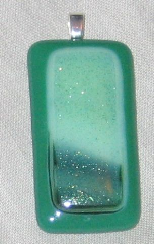
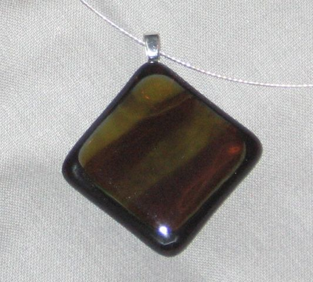
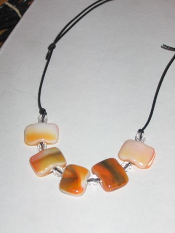
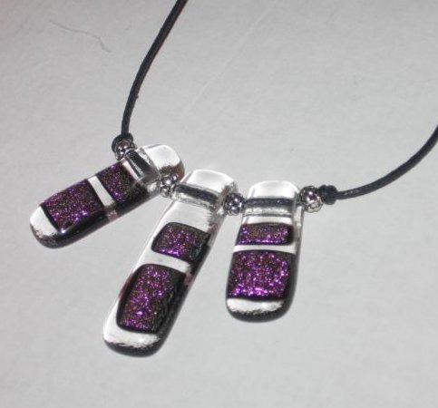
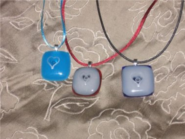
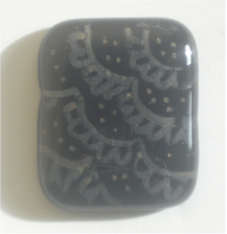
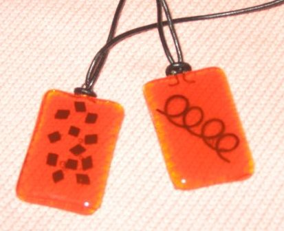
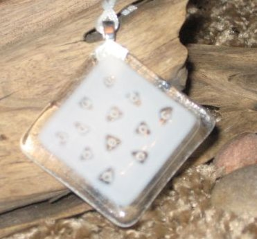
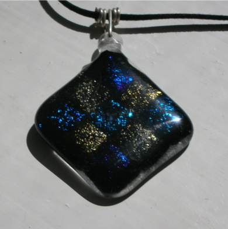

|
 Kapussi eli koru"kivi" Liimattu metalliseen ripustuslenkkiin Marita Sp‰nn‰ri |
 Hopeaketju kaipaa seurakseen kauniin ripustuslenkin Marita Sp‰nn‰ri |
|
 Nauhaan pujotetut lasihelmet. Korussa kuitupaperilla tehty nauhakuja Marita Sp‰nn‰ri |
 Toinen helmikoru johon on k‰ytetty irid-lasia aluslasina Oikeanpuoleisesta helmest‰ n‰kee hyvin ett‰ lasi vet‰ytyy kapeammaksi nauhakujan kohdalta. V‰lihelmet tasaavat ripustusta Marita Sp‰nn‰ri |
|
 N‰m‰ riipukset on koristeltu hopetussilla. Tussi lasin pinnalla kest‰‰ hyvin, Marita Sp‰nn‰ri |
 lasien v‰liss‰ hopeatussi muuttuu usein harmaammaksi. Marita Sp‰nn‰ri |
|  Laminointi. Vasemmassa kuparifolion paloja, oikealla Kanthal.lankaa Marita Sp‰nn‰ri |
 Kuviot hiekkapuhallettu aluslasin pintav‰rj‰yksen l‰pi. Samantapaisen vaikutelman saa aikaan jos poraa kuplien paikat p‰‰lilasiin. Marita Sp‰nn‰ri |
|
 Riipus irid-lasista. Dikroid-lasi antaa viel‰ s‰ikyv‰mm‰n heijastuksen. Lauri Levanto |